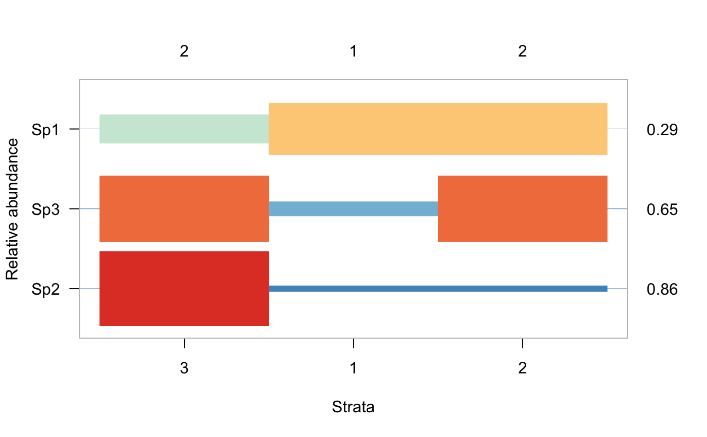

opticut-package.RdLikelihood based optimal partitioning and indicator species analysis. Finding the best binary partition for each species based on model selection, with the possibility to take into account modifying/confounding variables as described in Kemencei et al. (2014) <doi:10.1556/ComEc.15.2014.2.6>. The package implements binary and multi-level response models, various measures of uncertainty, Lorenz-curve based thresholding, with native support for parallel computations.
The DESCRIPTION file:
This package was not yet installed at build time.
Index: This package was not yet installed at build time.
The main user interface are the opticut
and multicut functions
to find the optimal binary or multi-level response models.
Make sure to evaluate uncertainty.
optilevels finds the optimal number of factor levels.
Kemencei, Z., Farkas, R., Pall-Gergely, B., Vilisics, F., Nagy, A., Hornung, E. & Solymos, P., 2014. Microhabitat associations of land snails in forested dolinas: implications for coarse filter conservation. Community Ecology 15:180--186. <doi:10.1556/ComEc.15.2014.2.6>
## community data y <- cbind( Sp1=c(4,6,3,5, 5,6,3,4, 4,1,3,2), Sp2=c(0,0,0,0, 1,0,0,1, 4,2,3,4), Sp3=c(0,0,3,0, 2,3,0,5, 5,6,3,4)) ## stratification g <- c(1,1,1,1, 2,2,2,2, 3,3,3,3) ## find optimal partitions for each species oc <- opticut(formula = y ~ 1, strata = g, dist = "poisson") summary(oc)#> Multivariate opticut results, comb = rank, dist = poisson #> #> Call: #> opticut.formula(formula = y ~ 1, strata = g, dist = "poisson") #> #> Best supported models with logLR >= 2: #> split assoc I mu0 mu1 logLR w #> Sp3 2+3 ++ 0.6471 0.75 3.50 4.793 0.6962 #> Sp2 3 +++ 0.8571 0.25 3.25 9.203 0.9577 #> 2 binary splits #> 1 species not shown #>#> Multivariate multicut uncertainty results #> type = asymp, B = 999, level = 0.95 #> #> split R I Lower Upper #> Sp1 1+2 1 0.2839 0.01915 0.5529 #> Sp3 2+3 1 0.6136 0.22377 0.8693 #> Sp2 3 1 0.8270 0.50338 0.9663## go beyond binary partitions mc <- multicut(formula = y ~ 1, strata = g, dist = "poisson") summary(mc)#> Multivariate multticut results, dist = poisson #> #> Call: #> multicut.formula(formula = y ~ 1, strata = g, dist = "poisson") #> #> Species models with logLR >= 2: #> split assoc I logLR #> Sp2 3 +++ 1.0000 10.589 #> Sp3 3 ++ 0.7143 5.952 #> 1 species not shown #>#> $delta #> [1] 0.0000000 -0.4980423 NA #> #> $coef #> 1 2 3 #> [1,] 0.00 0.50 3.25 #> [2,] 0.25 0.25 3.25 #> [3,] NA NA NA #> #> $rank #> 1 2 3 #> [1,] 1 2 3 #> [2,] 1 1 2 #> [3,] NA NA NA #> #> $levels #> $levels[[1]] #> 1 2 3 #> "1" "2" "3" #> #> $levels[[2]] #> 1 2 3 #> "1+2" "1+2" "3" #> #>